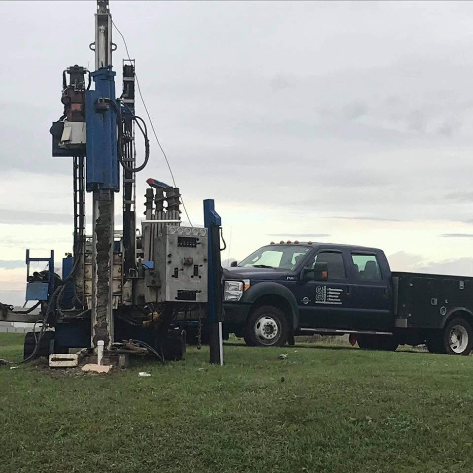
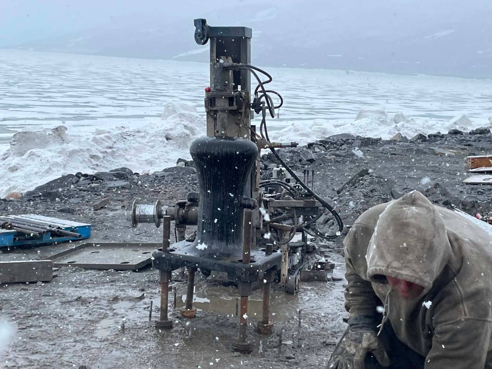
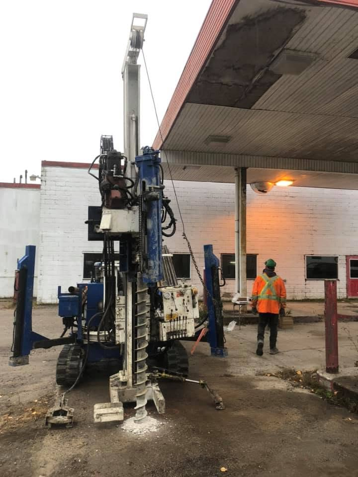

Gino Girard
Plus de 35 ans d'expérience en forage et en exploration minière, sur des chantiers partout dans le monde.
Une entreprise familiale dirigée par Gino Girard et son fils Gicy. Vous parlez directement aux gens qui forent, du premier appel à la remise des échantillons.

Plus de 35 ans d'expérience en forage et en exploration minière, sur des chantiers partout dans le monde.
Votre interlocuteur au quotidien, du premier appel à la remise des échantillons.

Nous sommes une compagnie de forage spécialisée en environnement et en géotechnique. Basés à Montréal, nous nous déplaçons partout au Québec, et même plus loin.
Nos clients sont des firmes de génie-conseil, des laboratoires, des consultants en environnement et des entrepreneurs. Ils nous confient l'exécution de leurs programmes de forage, du chantier urbain au site éloigné.

Un forage mal préparé peut toucher une conduite de gaz ou un câble électrique. Nos procédures sont conçues pour que ça n'arrive pas.
Tu aimes travailler dehors, avec de la machinerie, dans une petite équipe où ton travail compte? Écris-nous ou appelle Gicy.